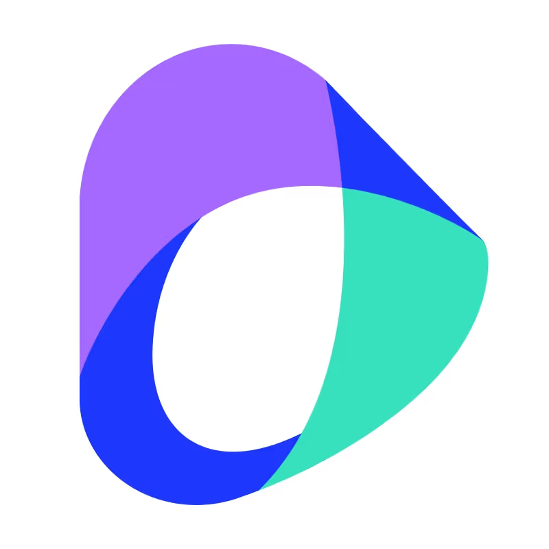
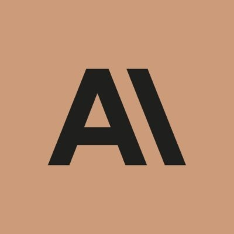
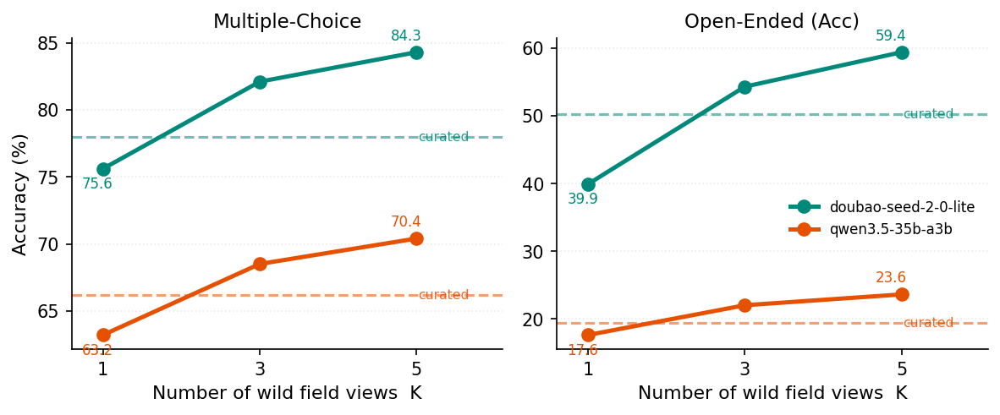
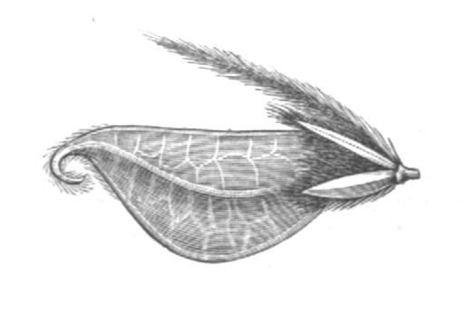
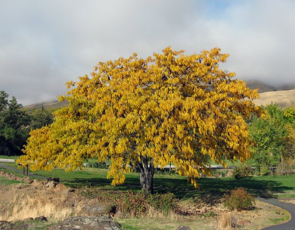
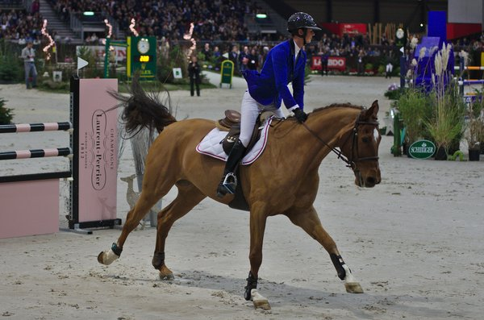

Open-Ended Taxonomic Naming for Agricultural AI
Open-ended taxonomic naming is a foundational capability for intelligent agricultural decision-making. It requires a model to generate a standardized name for an organism or breed in an image without relying on a predefined label set. Most agricultural vision benchmarks instead assume a fixed label set, leaving unclear whether Large Multimodal Models (LMMs) can independently produce the correct name.
AgriTaxon is a knowledge-grounded and AI-ready benchmark suite spanning Crops, Livestock, Pests, and Weeds. Each core entity is linked through Wikidata to FAO Ecocrop, FAO DAD-IS, or the EPPO Global Database and is paired with machine-readable identifiers, a canonical name, collected aliases, a domain label, and an executable evaluation protocol. We evaluate 14 LMMs using four-option recognition and open-ended naming. Alias validation by GPT-5 Mini agrees with a domain expert on 98% of 100 sampled exact-match errors.
Core, Hard, and In-the-Wild Evaluation
The core benchmark measures broad agricultural entity naming. AgriTaxon-Hard is a performance-conditioned diagnostic subset, while AgriTaxon-Wild evaluates the same naming capability using multiple independent field observations.
| Dataset | Purpose | Entities | Images |
|---|---|---|---|
| AgriTaxon Core | Broad taxonomic-naming benchmark | 7,432 | 7,432 |
| AgriTaxon-Hard | Performance-conditioned diagnostic stress test | 1,052 | 1,052 |
| AgriTaxon-Wild | In-the-wild multi-image evaluation | 2,969 | 14,845 |
AgriTaxon-Hard contains core samples answered correctly by at most two of the 14 evaluated models under the default multiple-choice protocol. It is intended for failure analysis and tool-assisted recovery, not as an estimate of average benchmark performance.
AgriTaxon-Wild uses strict Wikidata P3151 alignment to iNaturalist, without fuzzy name matching. It retains 2,969 entities with five qualifying field photographs each and evaluates one, three, or five views of the same entity.
Leaderboard
Accuracy (%) on AgriTaxon for 14 LMMs, ranked by OE-Acc within each block. MC Macro, OE-EM, and OE-Acc are unweighted macro-averages across the four tracks; the four track-specific open-ended columns report EM. Bold = best per column.
| Model | Release | Hard | Multi-Choice | Open-Ended | |||||||||
|---|---|---|---|---|---|---|---|---|---|---|---|---|---|
| Crop | Live. | Pest | Weed | Macro | Crop | Live. | Pest | Weed | EM | Acc | |||
| Proprietary Models | |||||||||||||
| gemini-3-pro-preview | 2025.11 | 9.0 | 83.7 | 95.5 | 72.5 | 78.1 | 82.5 | 43.6 | 49.4 | 30.0 | 53.0 | 44.0 | 51.2 |
 doubao-seed-2-0-pro |
2026.02 | 6.0 | 81.3 | 88.8 | 70.9 | 76.6 | 79.4 | 45.3 | 35.4 | 39.6 | 56.6 | 44.2 | 48.8 |
| gemini-3-flash-preview | 2025.12 | 8.7 | 84.9 | 95.1 | 72.7 | 79.1 | 83.0 | 22.4 | 37.6 | 22.9 | 50.4 | 33.4 | 48.1 |
| doubao-seed-2-0-lite | 2026.02 | 5.6 | 78.1 | 87.6 | 70.1 | 74.7 | 77.6 | 37.3 | 34.3 | 30.5 | 48.8 | 37.7 | 44.2 |
| gpt-5 | 2025.08 | 8.4 | 79.1 | 92.9 | 68.8 | 73.3 | 78.6 | 30.6 | 34.3 | 17.2 | 36.2 | 29.6 | 37.6 |
| gpt-5-mini | 2025.08 | 7.7 | 71.6 | 87.5 | 62.7 | 64.6 | 71.6 | 28.4 | 26.4 | 9.8 | 23.6 | 22.0 | 27.4 |
 claude-haiku-4-5 |
2025.10 | 4.7 | 58.1 | 74.5 | 52.9 | 56.2 | 60.4 | 12.5 | 19.7 | 4.0 | 8.6 | 11.2 | 14.7 |
| Open-Source Models | |||||||||||||
| kimi-k2.5 | 2026.01 | 2.1 | 75.0 | 86.0 | 65.8 | 68.0 | 73.7 | 29.8 | 30.9 | 20.0 | 39.2 | 30.0 | 38.1 |
| 2025.12 | 6.2 | 66.7 | 77.0 | 57.9 | 58.6 | 65.1 | 33.2 | 21.3 | 10.4 | 26.6 | 22.9 | 30.5 | |
| qwen3-vl-235b-a22b | 2025.09 | 2.2 | 66.4 | 81.5 | 63.2 | 62.5 | 68.4 | 23.5 | 24.2 | 13.5 | 25.8 | 21.7 | 27.6 |
| qwen3.5-397b-a17b | 2026.02 | 9.2 | 70.5 | 85.4 | 65.8 | 65.8 | 71.9 | 25.3 | 23.6 | 13.8 | 24.8 | 21.9 | 27.1 |
| qwen3-vl-30b-a3b | 2025.10 | 2.2 | 59.2 | 70.1 | 55.9 | 54.6 | 59.9 | 19.9 | 24.2 | 5.3 | 14.6 | 16.0 | 22.5 |
| 2025.12 | 5.8 | 59.3 | 71.3 | 55.4 | 55.1 | 60.3 | 21.6 | 21.3 | 5.7 | 12.7 | 15.3 | 19.9 | |
| qwen3.5-35b-a3b | 2026.02 | 4.2 | 67.1 | 80.9 | 61.4 | 61.7 | 67.8 | 11.3 | 18.0 | 3.9 | 12.6 | 11.4 | 17.6 |
Hard = performance-conditioned AgriTaxon-Hard accuracy (≤2 of 14 models correct under the default MC protocol; 1,052 samples). The four OE track columns report exact match after normalization. EM and alias-aware Acc are unweighted macro-averages across the four tracks; the LLM judge agrees with a domain expert on 98% of 100 sampled EM errors.
📬 Submit to Leaderboard — If you would like your model or method to appear on this leaderboard, please contact us at zengx@nercita.org.cn with your evaluation results.
Multiple Field Views Improve Recognition and Naming
AgriTaxon-Wild evaluates the same 2,969 P3151-aligned entities using one curated Commons image or one, three, and five iNaturalist field observations. Candidate names and judging procedures remain fixed, allowing a controlled comparison of image provenance and multi-view evidence.
| Model | Setting | MC | OE-EM | OE-Acc |
|---|---|---|---|---|
| Doubao-Seed-2.0-Lite | Curated | 78.0 | 45.0 | 50.2 |
| Wild K=1 | 75.6 | 36.2 | 39.9 | |
| Wild K=3 | 82.1 | 51.0 | 54.3 | |
| Wild K=5 | 84.3 | 55.7 | 59.4 | |
| Qwen3.5-35B-A3B | Curated | 66.2 | 12.7 | 19.4 |
| Wild K=1 | 63.2 | 13.6 | 17.6 | |
| Wild K=3 | 68.5 | 19.5 | 22.0 | |
| Wild K=5 | 70.4 | 21.3 | 23.6 |
A single wild view is harder than the curated image for both models. By K=3, both MC and OE-Acc exceed the corresponding curated baselines, but the seeing-without-naming gap remains at K=5.

Key Findings
- Related-taxon confusion dominates the sampled errors — in a track-stratified sample of 75 Gemini 3 Pro Preview outputs scored as incorrect under alias-aware Acc, 63% predict a related but incorrect taxon.
- Recognition increases with Wikipedia visibility — entities with at most 100 monthly pageviews are answered correctly by 3.40 models on average, compared with 7.57 models above 10,000 views. Pageviews are a proxy for web visibility, not a causal estimate of training frequency.
- Cropping recovers visually underspecified hard cases — on the performance-conditioned AgriTaxon-Hard stress test, the image-crop tool raises Claude Haiku 4.5 accuracy from 4.7% to 10.4%.
- Web retrieval recovers missing knowledge — in a controlled GPT-5 Mini comparison on AgriTaxon-Hard, web search and webpage reading raise accuracy from 3.9% to 19.3%, a 15.4-point or 4.9-fold gain.
- Text-semantic distractors preserve the strongest challenge — for Gemini 3 Flash on the selected Hard cases, accuracy falls from 99.0% with random distractors to 8.8% with text-semantic distractors.
Explore the Embedding Space
7,432 agricultural entities embedded by Qwen3-Embedding-0.6B and projected via t-SNE. Scroll to zoom, drag to pan, hover for details, click to open Wikipedia.
Error Type Examples
Representative examples from the human-annotated 75 Acc-error cases (Gemini 3 Pro Preview, open-ended evaluation).



How AgriTaxon Works
Authority-grounded data collection. We query Wikidata for agricultural entities that carry both an authoritative database identifier (FAO Ecocrop, FAO DAD-IS, or EPPO) and a Wikimedia Commons image, forming a traceable authority chain for organisms and livestock breeds.
Cross-domain coverage. The 48,950 queried EPPO entries—mixing pests, weeds, pathogens, host plants, and other entities—are classified by GPT-5 Mini under predefined criteria; the pest and weed assignments form the corresponding tracks. Resolution filtering removes 154 images whose shorter edge is below 224px. A livestock-specific content check removes six images that do not depict a valid animal instance.
Dual evaluation protocols. Multiple-choice uses text-semantically similar entity names as distractors; open-ended requires independent entity-name production. Open-ended outputs are scored by exact match and alias-aware Acc, with core summary scores macro-averaged across the four tracks.
Potential Applications
AgriTaxon is designed to support a broad range of research directions across the multimodal AI and agricultural informatics communities.
Open-Ended Visual Recognition
A testbed for models that must produce organism or breed names rather than selecting from a fixed label set.
Long-Tail Understanding
Wikipedia pageviews support analysis of the association between web visibility and recognition of rare agricultural entities.
Retrieval-Augmented Generation
Authority-grounded labels (FAO, EPPO, Wikidata QIDs) provide natural retrieval anchors for augmenting LMMs.
Agentic Reasoning
Cropping and web retrieval target complementary visual-detail and external-knowledge bottlenecks.
Agricultural AI Deployment
Pest surveillance, quarantine enforcement, crop variety verification, and livestock breed identification.
Fine-Grained Classification
Semantically hard negatives and cross-domain coverage make a challenging FGVC benchmark.
Licensing & Access
AgriTaxon is publicly accessible. Reuse of images remains subject to each image's original license and attribution requirements.
- Source code, prompt templates & documentation (this repository): MIT License.
- Benchmark metadata & annotations (entity labels, evaluation splits, distractor sets): released under CC BY 4.0.
- Core images: sourced from Wikimedia Commons and subject to their original licenses.
- AgriTaxon-Wild images: sourced from iNaturalist and subject to their per-photo licenses and attribution requirements; some licenses include NonCommercial or NoDerivatives restrictions.
- Authority identifiers: Wikidata QIDs are available under CC0; FAO and EPPO identifiers are used for reference linking only.
The benchmark suite is hosted on Hugging Face at Xin1818/AgriTaxon. Users should consult the per-image license and attribution metadata distributed with the dataset before reuse.
Getting Started
# Download the dataset from Hugging Face pip install huggingface_hub huggingface-cli download Xin1818/AgriTaxon --repo-type dataset --local-dir dataset